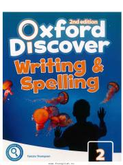

ODIngliz tilida yozish va imlo qoidalarini o'rganish uchun o'quv qo'llanma.
Ushbu qo'llanma o'quvchilarning ingliz tilida yozish va imlo qoidalarini o'zlashtirishiga mo'ljallangan. Kitobda turli qiziqarli modullar, so'z boyligini oshirish va matn tuzish ko'nikmalarini rivojlantirish uchun maxsus topshiriqlar mavjud.